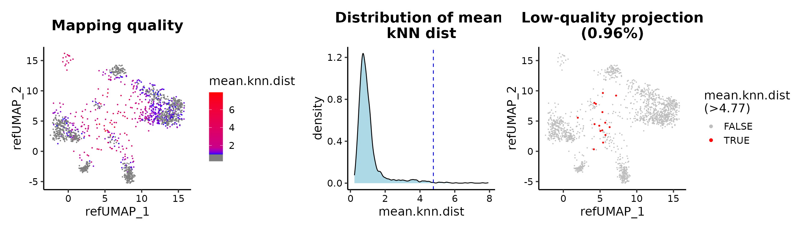
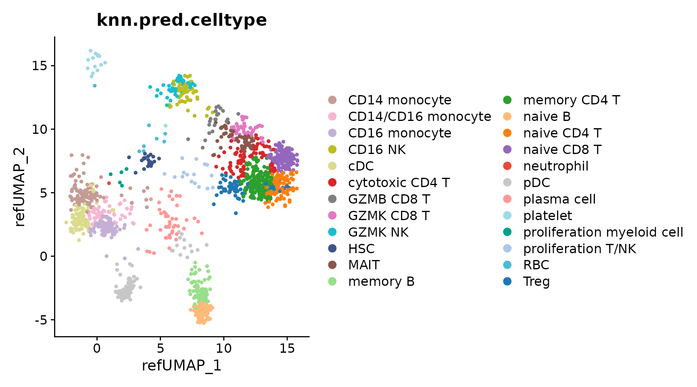
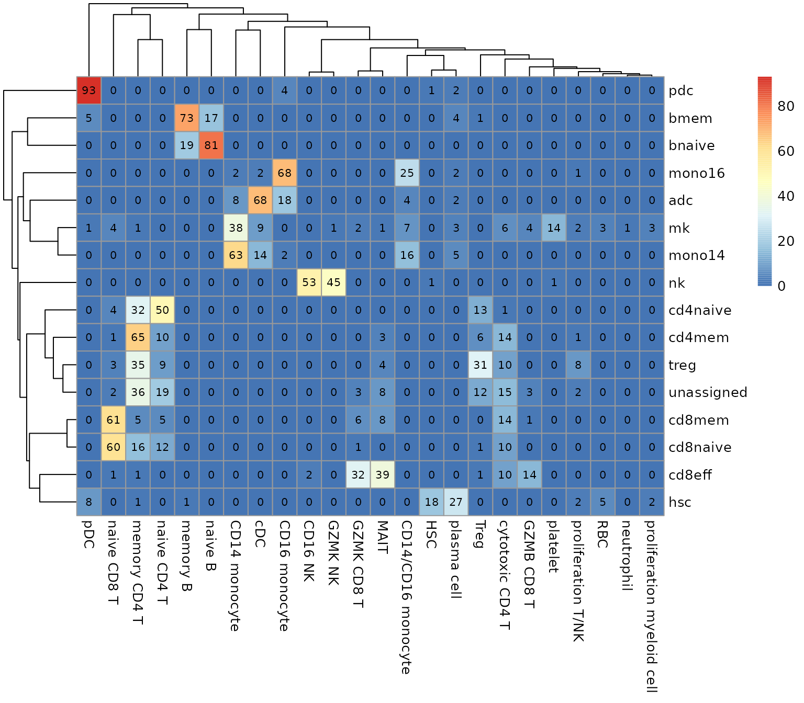

Build Reference Model
seu.ref <- readRDS("disco_pbmc_small.seurat.slim.rds")
DimPlot(seu.ref, pt.size = .4) +
scale_color_manual(values = seu.ref@misc$data.refplot$colors) +
geom_text(inherit.aes = F, data = seu.ref@misc$data.refplot$text.pos,
mapping = aes(x, y, label = label), size = 4)Extract signatures
Here we extract the top25 marker genes for each cell type (ribosomal and mitochondrial genes were removed).
data(ribo.genes)
table(Idents(seu.ref))##
## memory CD4 T CD16 NK
## 200 200
## memory B naive CD4 T
## 200 200
## GZMB CD8 T proliferation T/NK
## 200 200
## naive CD8 T cytotoxic CD4 T
## 200 200
## naive B Treg
## 200 200
## GZMK NK GZMK CD8 T
## 200 200
## MAIT CD16 monocyte
## 200 200
## CD14 monocyte platelet
## 200 200
## plasma cell CD14/CD16 monocyte
## 200 200
## pDC cDC
## 200 200
## neutrophil RBC
## 200 200
## proliferation myeloid cell HSC
## 110 108seu.ref[["RNA"]]@counts <- seu.ref[["RNA"]]@data
seu.ref <- NormalizeData(seu.ref)
all.markers <- mcFindAllMarkers(seu.ref, do.flatten = F, n.cores = 20)
top.genes <- lapply(all.markers, function(xx){
yy <- subset(xx, p_val_adj < 1e-6 & avg_log2FC > log2(1.5))
yy <- subset(yy, Gene.name.uniq %notin% ribo.genes)
yy <- yy[!grepl("^MT-", yy$Gene.name.uniq), ]
head(yy$Gene.name.uniq, 25)
})
sapply(top.genes, length)## memory CD4 T CD16 NK
## 25 25
## memory B naive CD4 T
## 25 25
## GZMB CD8 T proliferation T/NK
## 25 25
## naive CD8 T cytotoxic CD4 T
## 25 25
## naive B Treg
## 25 25
## GZMK NK GZMK CD8 T
## 25 25
## MAIT CD16 monocyte
## 25 25
## CD14 monocyte platelet
## 25 25
## plasma cell CD14/CD16 monocyte
## 25 25
## pDC cDC
## 25 25
## neutrophil RBC
## 25 25
## proliferation myeloid cell HSC
## 25 25# rename the gene set
# [Note] Avoid to use '_' or '-' in the gene set names.
names(top.genes) <- paste0("feature.", 1:length(top.genes))
# the background genes are the union of all markers
bg.genes <- do.call(c, top.genes) %>% unique()Transfer raw count matrix to gene set score matrix
seu.ref <- ComputeModuleScore(seu.ref, gene.sets = top.genes,
bg.genes = bg.genes, method = "UCell",
cores = 20)
# The signature score matrix is stored in 'SignatureScore' assay
Assays(seu.ref)## [1] "RNA" "SignatureScore"DefaultAssay(seu.ref) <- "SignatureScore"
FeaturePlot(seu.ref, features = "feature.1", pt.size = .3)
Training reference model
gss.mat <- FetchData(seu.ref, vars = rownames(seu.ref))
embeddings.df <- FetchData(seu.ref, vars = paste0("UMAP_", 1:2))
batch.size = 4000 # number of subsampled cells for each SVR model
n.models = 5 # number of SVR models trained
umap.model <- FitEnsembleSVM(feature.mat = gss.mat,
emb.mat = embeddings.df,
batch.size = batch.size,
n.models = n.models,
cores = 5)Save the reference model
ref.cellmeta stores:
[optional] colors: for plots
[optional] text.pos: text annotation on the reference plots
meta.data: cell meta data (embeddings + cell type information)
ref.cellmeta <- seu.ref@misc$data.refplot
ref.cellmeta$meta.data <- FetchData(seu.ref, vars = c(paste0("UMAP_", 1:2), "cell_type", "cell_subtype"))
reference <- list(
"models" = list(
"umap" = umap.model
),
"genes" = list(
"gene.sets" = top.genes, # list
"bg.genes" = bg.genes # vector
),
"ref.cellmeta" = ref.cellmeta # list for reference plot
)
saveRDS(reference, "model.disco_pbmc_quickstart.rds")Map Query to Reference
Reference mapping
reference <- readRDS("model.disco_pbmc_quickstart.rds")
seu.q <- readRDS("query_pbmc_small.seurat.slim.rds")
seu.q[["RNA"]]@counts <- seu.q[["RNA"]]@data
seu.q <- ProjectSVR::MapQuery(seu.q, reference = reference,
add.map.qual = T, ncores = 5)
p1 <- DimPlot(seu.q, reduction = "ref.umap", group.by = "donor")
p2 <- DimPlot(seu.q, reduction = "ref.umap", group.by = "cell_subtype",
label = T)
(p1 + p2) & ggsci::scale_color_d3("category20")
Maping quality
The metric for evaluating the mapping quality is essential for users to identify and discard erroneous projected cells. We introduce the mean kNN distance and demonstrate its utilization for quality control in reference mapping using ProjectSVR.
We believe that a good projection means the local topological relationship should be kept after projection. Thus we build a nearest neighbor (NN) graph in feature space (signature score matrix) and measure the average distance of its K nearest neighbors (called mean.knn.dist). A smaller mean.knn.dist means a good projection.

To access the p-value of a given mean.knn.dist, we build the null distribution by calculating the randomly selected K nearest neighbors for the given cell and repeat the process by 1000 times. Then the empirical p values were calculated according to this null distribution. Adjusted p values were calculated by Benjamini-Hochberg Procedure.
data.plot <- FetchData(seu.q, vars = c(paste0("refUMAP_", 1:2), "mean.knn.dist", "mapQ.p.adj"))
ggplot(data.plot, aes(mean.knn.dist, -log10(mapQ.p.adj))) +
geom_point(size = .3) +
geom_vline(xintercept = 4, linetype = "dashed", color = "blue")
data.plot <- FetchData(seu.q, vars = c(paste0("refUMAP_", 1:2), "mean.knn.dist", "mapQ.p.adj"))
cut.off <- 4
low.qual.prop <- prop.table(table(data.plot$mean.knn.dist > cut.off))["TRUE"]
low.qual.prop <- round(low.qual.prop, 4) *100
p1 <- ggplot(data.plot, aes(refUMAP_1, refUMAP_2)) +
geom_point(aes(color = mean.knn.dist), size = .2) +
scale_color_gradientn(colours = c("blue", "red"), values = c(0.1, 0.2, 1)) +
ggtitle("Mapping quality") +
theme_classic(base_size = 15) +
theme(axis.text = element_text(color = "black"),
plot.title = element_text(hjust = .5, face = "bold"))
p2 <- ggplot(data.plot, aes(mean.knn.dist)) +
geom_density(fill = "lightblue") +
geom_vline(xintercept = cut.off, linetype = "dashed", color = "blue") +
ggtitle("Distribution of mean \nkNN dist") +
theme_classic(base_size = 15) +
theme(axis.text = element_text(color = "black"),
plot.title = element_text(hjust = .5, face = "bold"))
p3 <- ggplot(data.plot, aes(refUMAP_1, refUMAP_2)) +
geom_point(aes(color = mean.knn.dist > cut.off, size = mean.knn.dist > cut.off)) +
ggtitle(sprintf("Low-quality projection\n(%s%%)", low.qual.prop)) +
scale_color_manual(values = c("grey", "red")) +
scale_size_manual(values = c(0.1, 0.5), guide = "none") +
guides(color = guide_legend(title = sprintf("mean.knn.dist\n(>%s)", cut.off))) +
theme_classic(base_size = 15) +
theme(axis.text = element_text(color = "black"),
plot.title = element_text(hjust = .5, face = "bold"))
p1 + p2 + p3
seu.q$cell_subtype2 <- seu.q$cell_subtype
PlotProjection(seu.q, reference, split.by = "cell_subtype2",
ref.color.by = "cell_subtype",
ref.size = .5, ref.alpha = .3, query.size = 1,
query.alpha = .5, n.row = 4)
Label transfer
seu.q <- ProjectSVR::LabelTransfer(seu.q, reference, ref.label.col = "cell_subtype")
DimPlot(seu.q, reduction = "ref.umap", group.by = "knn.pred.celltype") +
scale_color_manual(values = reference$ref.cellmeta$colors)
data.stat <- table(seu.q$cell_subtype, seu.q$knn.pred.celltype)
pheatmap::pheatmap(data.stat, display_numbers = T, number_format = "%.0f",
number_color = "black")
Session Info
sessionInfo()## R version 4.1.2 (2021-11-01)
## Platform: x86_64-pc-linux-gnu (64-bit)
## Running under: CentOS Linux 7 (Core)
##
## Matrix products: default
## BLAS: /opt/R4.1/lib64/R/lib/libRblas.so
## LAPACK: /opt/R4.1/lib64/R/lib/libRlapack.so
##
## locale:
## [1] LC_CTYPE=en_US.UTF-8 LC_NUMERIC=C
## [3] LC_TIME=en_US.UTF-8 LC_COLLATE=en_US.UTF-8
## [5] LC_MONETARY=en_US.UTF-8 LC_MESSAGES=en_US.UTF-8
## [7] LC_PAPER=en_US.UTF-8 LC_NAME=C
## [9] LC_ADDRESS=C LC_TELEPHONE=C
## [11] LC_MEASUREMENT=en_US.UTF-8 LC_IDENTIFICATION=C
##
## attached base packages:
## [1] stats graphics grDevices utils datasets methods base
##
## other attached packages:
## [1] forcats_0.5.2 stringr_1.4.1 dplyr_1.0.10
## [4] purrr_0.3.4 readr_2.1.2 tidyr_1.2.1
## [7] tibble_3.1.8 ggplot2_3.4.1 tidyverse_1.3.2
## [10] sp_1.5-0 SeuratObject_4.1.2 Seurat_4.2.0
## [13] ProjectSVR_0.1.0.9000
##
## loaded via a namespace (and not attached):
## [1] utf8_1.2.2 reticulate_1.26 tidyselect_1.1.2
## [4] mlr3learners_0.5.4 htmlwidgets_1.5.4 BiocParallel_1.28.3
## [7] grid_4.1.2 Rtsne_0.16 mlr3misc_0.11.0
## [10] munsell_0.5.0 codetools_0.2-18 bbotk_0.5.4
## [13] ragg_1.2.2 ica_1.0-3 future_1.28.0
## [16] miniUI_0.1.1.1 mlr3verse_0.2.5 withr_2.5.0
## [19] spatstat.random_3.0-1 colorspace_2.0-3 progressr_0.11.0
## [22] highr_0.9 knitr_1.40 uuid_1.1-0
## [25] rstudioapi_0.14 stats4_4.1.2 ROCR_1.0-11
## [28] tensor_1.5 listenv_0.8.0 labeling_0.4.2
## [31] mlr3tuning_0.14.0 lgr_0.4.4 polyclip_1.10-0
## [34] pheatmap_1.0.12 farver_2.1.1 rprojroot_2.0.3
## [37] parallelly_1.32.1 vctrs_0.5.1 generics_0.1.3
## [40] clusterCrit_1.2.8 xfun_0.33 R6_2.5.1
## [43] doParallel_1.0.17 clue_0.3-61 isoband_0.2.5
## [46] spatstat.utils_3.0-1 cachem_1.0.6 assertthat_0.2.1
## [49] promises_1.2.0.1 scales_1.2.1 googlesheets4_1.0.1
## [52] rgeos_0.5-9 gtable_0.3.1 globals_0.16.1
## [55] goftest_1.2-3 rlang_1.0.6 systemfonts_1.0.4
## [58] GlobalOptions_0.1.2 splines_4.1.2 lazyeval_0.2.2
## [61] gargle_1.2.1 paradox_0.10.0 spatstat.geom_3.0-3
## [64] broom_1.0.1 checkmate_2.1.0 modelr_0.1.9
## [67] yaml_2.3.5 reshape2_1.4.4 abind_1.4-5
## [70] mlr3_0.14.0 backports_1.4.1 httpuv_1.6.6
## [73] tools_4.1.2 ellipsis_0.3.2 spatstat.core_2.4-4
## [76] jquerylib_0.1.4 RColorBrewer_1.1-3 BiocGenerics_0.40.0
## [79] ggridges_0.5.3 Rcpp_1.0.9 plyr_1.8.7
## [82] rpart_4.1.16 deldir_1.0-6 pbapply_1.5-0
## [85] GetoptLong_1.0.5 cowplot_1.1.1 S4Vectors_0.32.4
## [88] zoo_1.8-11 haven_2.5.1 ggrepel_0.9.1
## [91] cluster_2.1.4 here_1.0.1 fs_1.5.2
## [94] magrittr_2.0.3 data.table_1.14.2 scattermore_0.8
## [97] circlize_0.4.15 reprex_2.0.2 lmtest_0.9-40
## [100] RANN_2.6.1 googledrive_2.0.0 fitdistrplus_1.1-8
## [103] matrixStats_0.62.0 hms_1.1.2 patchwork_1.1.2
## [106] mime_0.12 evaluate_0.16 xtable_1.8-4
## [109] readxl_1.4.1 IRanges_2.28.0 gridExtra_2.3
## [112] shape_1.4.6 UCell_1.3.1 compiler_4.1.2
## [115] mlr3cluster_0.1.4 KernSmooth_2.23-20 crayon_1.5.1
## [118] htmltools_0.5.3 tzdb_0.3.0 mgcv_1.8-40
## [121] later_1.3.0 lubridate_1.8.0 DBI_1.1.3
## [124] dbplyr_2.2.1 ComplexHeatmap_2.10.0 rappdirs_0.3.3
## [127] MASS_7.3-58.1 mlr3data_0.6.1 Matrix_1.5-1
## [130] cli_3.4.1 parallel_4.1.2 igraph_1.3.5
## [133] pkgconfig_2.0.3 pkgdown_2.0.6 plotly_4.10.0
## [136] spatstat.sparse_3.0-0 xml2_1.3.3 foreach_1.5.2
## [139] bslib_0.4.0 mlr3fselect_0.7.2 rvest_1.0.3
## [142] digest_0.6.29 sctransform_0.3.5 RcppAnnoy_0.0.19
## [145] mlr3filters_0.6.0 spatstat.data_3.0-0 cellranger_1.1.0
## [148] rmarkdown_2.16 leiden_0.4.3 uwot_0.1.14
## [151] curl_5.0.1 shiny_1.7.2 rjson_0.2.21
## [154] lifecycle_1.0.3 nlme_3.1-155 jsonlite_1.8.0
## [157] mlr3tuningspaces_0.3.0 desc_1.4.2 viridisLite_0.4.1
## [160] fansi_1.0.3 pillar_1.8.1 ggsci_2.9
## [163] lattice_0.20-45 fastmap_1.1.0 httr_1.4.4
## [166] survival_3.4-0 glue_1.6.2 mlr3viz_0.5.10
## [169] png_0.1-7 iterators_1.0.14 stringi_1.7.6
## [172] sass_0.4.2 mlr3pipelines_0.4.2 palmerpenguins_0.1.1
## [175] textshaping_0.3.6 memoise_2.0.1 irlba_2.3.5
## [178] future.apply_1.9.1